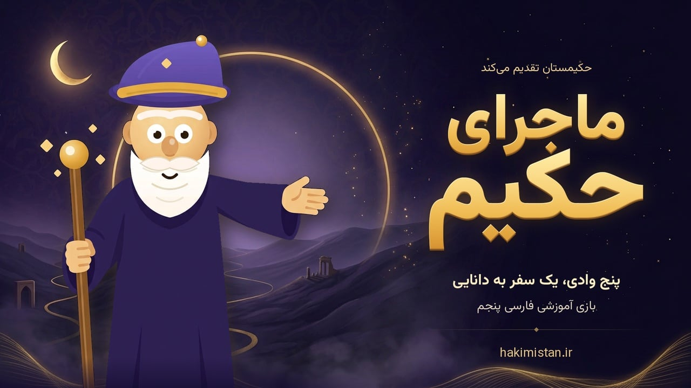
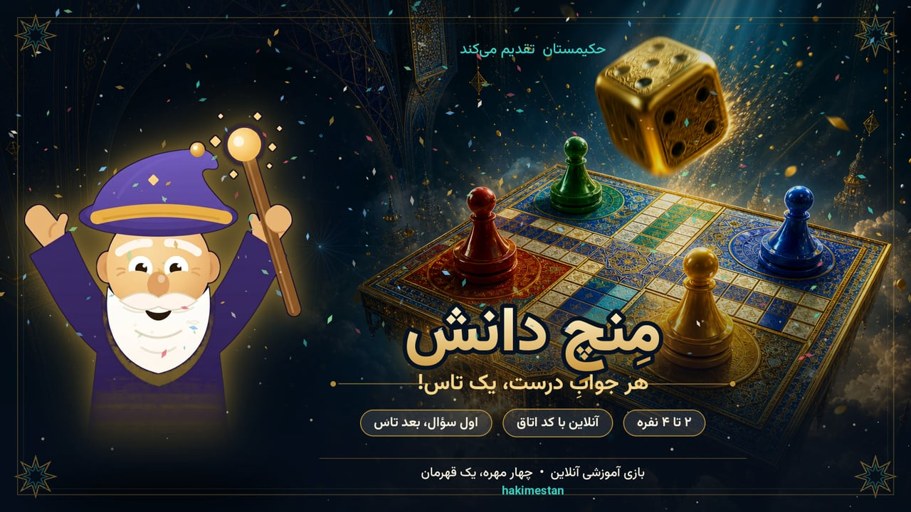
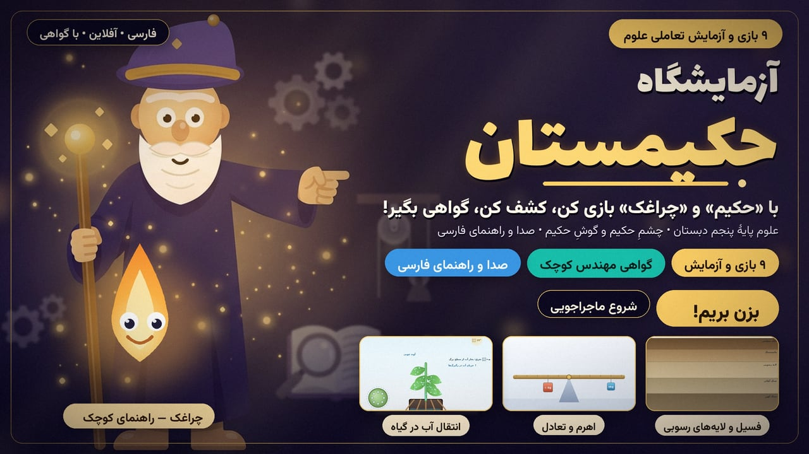
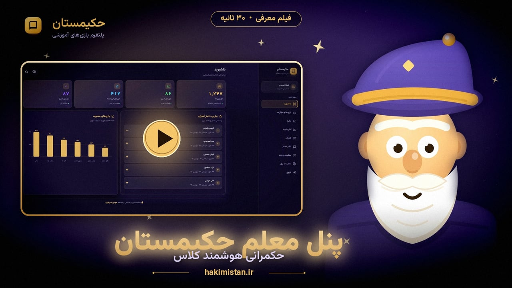

حکیمستان — دیار حکیم، سرزمین یادگیری
معلم پایه پنجم ابتدایی — استان گلستان، گنبدکاووس
«حکیمستان» یک سامانهی آموزشی تعاملی بر پایهی HTML است که شامل ۹ بازی آموزشی، ۷ ابزار (آزمونساز، دفتر معلم، کارگاه طرح درس، مبدل سؤال، پیامرسان کلاسی، پنل معلم و گفتوگو با «حکیم») و بیش از ۸۰ سؤال آماده با ۸ تم رنگی میباشد.
این سامانه برای پایه پنجم ابتدایی طراحی شده و هدفش این است که مفاهیم درسی از طریق بازی، یادگیری فعال و بازخورد فوری به دانشآموز منتقل شود.
تمام محتوا با HTML، CSS و JavaScript خالص ساخته شده و بهصورت PWA روی هر مرورگر و هر دستگاهی (موبایل، تبلت، رایانه) بدون نیاز به نصب اجرا میشود.

در سال تحصیلی گذشته، سه بازی آموزشی به دانشآموزان کلاس پایه پنجم داده شد. بچهها بازیها رو دوست داشتن و گفتن: «بازم بساز!»
ایدهٔ «حکیمستان» از همان جملهٔ بچهها آمد؛ امسال با همین انگیزه، پلتفرمی کامل با ۹ بازی آموزشی، ۷ ابزار، پیامرسان کلاسی و دستیار هوش مصنوعی «حکیم» ساخته شد.
| بازی | درس | پایه | نوع |
|---|---|---|---|
| فتح کهن دیار ایران | مطالعات اجتماعی (دروس ۱۸-۲۱) | پنجم | سوالهای ثابت |
| ماجرای حکیم | ادبیات فارسی | پنجم | قابل شخصیسازی |
| مار و پلهی دانش | علوم | پنجم | قابل شخصیسازی |
| کارتهای حکیم | چند درس | پنجم | قابل شخصیسازی |
| جدول حکمت | هدیه + علوم | پنجم | قابل شخصیسازی |
| راز گنج حکیم | اخلاق + ریاضی | پنجم | قابل شخصیسازی |
| آزمایشگاه ۲بعدی | علوم (۹ آزمایش تعاملی) | پنجم | محتوای ثابت |
| منچِ دانش آنلاین | هر درس (۲ تا ۴ نفره) | پنجم | قابل شخصیسازی |
| مار و پله آنلاین | هر درس (۲ تا ۴ نفره) | پنجم | قابل شخصیسازی |
| ابزار | توضیح | پایه |
|---|---|---|
| آزمونساز | ساخت آزمون + تصحیح خودکار | همه |
| دفتر معلم | حضور غیاب + نمرات | همه |
| کارگاه طرح درس | بانک نمونه + ویرایشگر | همه |
| مبدل سؤال | اتصال به بازیها | همه |
| پیامرسان کلاسی | چت امن | همه |
| پنل معلم | مدیریت کامل | همه |
| درسگاه | استودیوی ضبط تدریس از روی کتاب + وبکم | همه |
همهی بازیهای سؤالی به جز «فتح کهن دیار ایران» و «آزمایشگاه ۲بعدی»، به صورت یک قالب آموزشی طراحی شدهاند. یعنی معلم میتواند بدون دانش برنامهنویسی، سوالهای هر بازی را مطابق درس خودش بسازد و تغییر دهد.
این ویژگی باعث میشود:
استثناها: بازی «فتح کهن دیار ایران» به دلیل محتوای اختصاصی تاریخی و «آزمایشگاه ۲بعدی» به دلیل شبیهسازهای آمادهی علوم، هر دو با محتوای ثابت ارائه میشوند.
«حکیمستان» هنوز در اختیار مدارس یا کاربران عمومی قرار نگرفته و فعلاً فقط برای شرکت در این مسابقه آماده شده است.
فاز بعدی پروژه، تست میدانی واقعی آن در کلاس درس و دریافت بازخورد مستقیم دانشآموزان و معلمان خواهد بود.
نمایی از محیط حکیمستان:



یکی از ابزارهای مهم حکیمستان، پیامرسان کلاسی است که امکان ارتباط امن و ساده بین معلم و دانشآموزان را فراهم میکند.
قابلیتها:
«حکیم» یک شخصیت هوشمند مبتنی بر هوش مصنوعی است که در لابی حکیمستان حضور دارد. دانشآموزان میتوانند با او گفتوگو کنند و دربارهی درسها، تاریخ ایران، ریاضی و موضوعات دیگر بپرسند.
حکیم با چهرهی متحرک، حالتهای احساسی مختلف (شاد، متفکر، دانا و...) و پاسخهای آموزشی، محیطی گرم و دوستانه برای دانشآموزان ایجاد میکند.